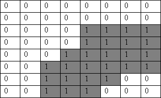
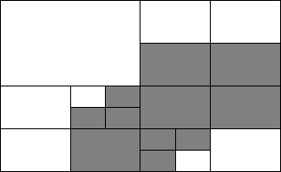
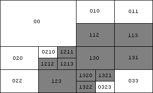

| Nama Program: | pjj0307.PAS / C / CPP |
| Batas Run-time: | 1 detik / test-case |
| Batas Memori: | 16 MB |
| Nama Berkas Masukan: | Standard input (keyboard) |
| Nama Berkas Keluaran: | Standard output (layar) |
Pernah dengar istilah quadtree? Quadtree adalah suatu struktur data yang dapat dipergunakan untuk mengkodekan isi suatu binary image (citra biner). Kita langsung saja melihat contoh berikut. Perhatikan matriks biner (setiap elemen berisi 2 kemungkinan harga) berikut (bagian berharga 0 diberi warna putih dan bagian berharga 1 diberi warna abu-abu).
Kalau kita membagi matriks dalam empat kuadran yang sama besarnya, maka kita akan mendapatkan kuadran kiri atas berisi harga-harga yang sama (homogen), sementara kuadran lain tidak homogen. Untuk setiap kuadran yang tidak homogen, dilakukan pembagian lebih lanjut menjadi 4 kuadran yang lebih kecil, dan seterusnya, sehingga akan terbentuk submatriks-submatriks homogen sebagai berikut.
Tentu, kuadran terkecil (tidak dapat dipecah lagi) yang mungkin adalah elemen matriks itu sendiri, dan kuadran terbesar yang homogen adalah seluruh matriks tersebut, seandainya semua elemen berharga sama. Karena proses pemecahan ini selalu membagi matriks menjadi 4 bagian yang sama besar, maka matriks haruslah berbentuk bujur sangkar berukuran 2p x 2p.
Sekarang kita melakukan pengkodean atas kuadran-kuadran tersebut. Aturan kode suatu kuadran:
Digit pertama menyatakan harga dari kuadran yang homogen tersebut. Karena elemen-elemen matriks berharga biner maka hanya ada dua harga: 0 atau 1.
Digit-digit berikutnya menyatakan kode lokasi sebagai berikut:
Pada sekali pembagian menjadi 4 kuadran, masing-masing kuadran dinomori sbb: 0 untuk kiri atas, 1 untuk kanan atas, 2 untuk kiri bawah, dan 3 untuk kanan bawah.
Pembagian berikutnya sama dengan pembagian sebelumnya, dan digit yang baru dituliskan pada posisi setelah digit sebelumnya. Misalnya, pada contoh di atas, kuadran berkode 1 dipecah ke dalam kuadran berkode 10 dan 11 yang homogen berharga 0, dan kuadran berkode 12 dan 13 yang homogen berharga 1.
Jadi dengan aturan pengkodean ini contoh matriks di atas dapat dikodekan seperti pada gambar berikut.
Buatlah program yang mengeluarkan kode-kode setiap kuadran homogen berharga 1 dari matriks biner yang diberikan.
Baris pertama berisikan dua integer R dan C yang dipisahkan spasi. Bilangan R menyatakan banyak baris matriks dan bilangan C menyatakan banyak kolom matriks (2 ≤ R ≤ 128, dan 2 ≤ C ≤ 128). R baris berikutnya berisi baris-baris matriks tersebut, dengan baris-baris pada input sesuai urutan baris pada matriks. Dalam satu baris, elemen-elemen berharga biner dituliskan dari kiri ke kanan sesuai urutan pda matriks, dipisahkan dengan spasi.
Jika ukuran matriks tidak tepat berharga 2p x 2p, Anda perlu memperluas matriks tersebut ke ukuran 2p x 2p dengan nilai p terkecil, dengan menambahkan baris-baris berharga 0 di bawah matriks, dan kolom-kolom berharga 0 di sebelah kanan matriks semula.
Keluaran hanya berupa kode-kode dari kuadran-kuadran homogen berharga 1, dengan masing-masing kode dituliskan pada baris berbeda dan terurut secara leksikografi (urutan dalam kamus). Ingat bahwa kuadran yang sudah homogen tidak boleh dipecahkan. Untuk menandakan akhir keluaran, cetak string 'END' setelah kode kuadran terakhir.
8 8 0 0 0 0 0 0 0 0 0 0 0 0 0 0 0 0 0 0 0 0 1 1 1 1 0 0 0 0 1 1 1 1 0 0 0 1 1 1 1 1 0 0 1 1 1 1 1 1 0 0 1 1 1 1 0 0 0 0 1 1 1 0 0 0
112 113 1211 1212 1213 123 130 131 1320 1321 1322 END
3 5 0 0 0 0 0 0 0 0 0 0 0 0 0 0 0
END
4 4 1 1 1 1 1 1 1 1 1 1 1 1 1 1 1 1
1 END
3 3 1 1 1 1 1 1 1 1 1
10 110 112 120 121 130 END
Pada contoh masukan 2, tidak ada kuadran berharga 1 yang akan dioutputkan sehingga keluarannya hanya string 'END' saja.
Pada contoh masukan 3, matriks yang hanya berisi harga-harga 1 dan berukuran tepat 2p x 2p, sehingga keluaran hanya terdiri dari sebuah kode '1' dan 'END'. Kode '1' menandakan bahwa kode lokasi adalah string kosong (tidak ada pembagian menjadi 4 kuadran).
Namun, hal tersebut tidak terjadi pada matriks yang tidak berukuran 2p x 2p. Pada contoh masukan 4, matriks harus dijadikan berukuran 4 x 4 dan kolom terkanan dan baris terbawah diisi 0. Maka terbentuklah 6 kuadran berharga 1 dan 7 kuadran berharga 0.